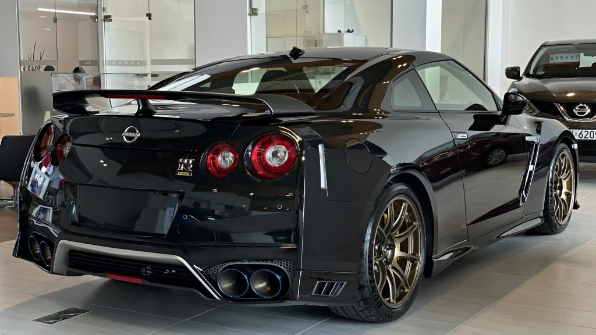

Nissan GT-R - dwudrzwiowe coupé firmy Nissan, zapowiedziane 6 grudnia 2007. Do sprzedaży międzynarodowej wszedł na początku czerwca 2008. Pod koniec 2010 roku przeszedł facelifting. W 2009 roku samochód zdobył tytuł World Performance Car of the Year.
Prace nad samochodem trwały od 2001 roku. Po zakończeniu produkcji modelu Skyline R34 w 2002 roku nastała 6-letnia przerwa. W 2003 roku powstał nieco odbiegający segmentem od poprzednika model V35. Był to pierwszy Skyline, który był sprzedawany w USA jako Infiniti G35. Nissan GT-R został oficjalnie zaprezentowany w 2007 roku, a wprowadzony do sprzedaży w 2008.